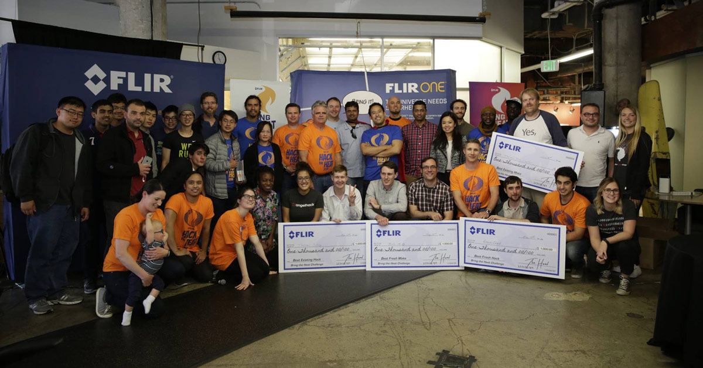

Prior to my long needed break , I spent several years programming and building up my skills by attending programs schools , doing contract/freelance jobs, and by participating in various hackathons. Several years back I attented the original "Dev Bootcamp" where I completed a 19-week fulltime course learning code and building various apps. Following that I had a several contract positions at some small to midsize startups including OrderAhead and Happy Inspector . In between and during these contract roles I also participated in many hackathons having won several of them - the biggest of which was Docusign's Momentum Hackathon. Just recently I completed a year long immersive program where I took in depth courses in full stack web development using Javascript and its related frameworks
About Me

Accomplishments/Awards
Best "sign and pay" app Docusign May 2017I won 1st in the "sign and pay" app category . I developed a rapp that enabled charities to collect recurring payments using Docusign and Stripe API's
Grand Prize FLIR hack the heat May 2016
I won the 1st at the FLIR thermal imaging hackathon . I built an app that detected deviations in thermal outputs to determine if someone was being evasive

*Hackathon Article*
1st place SparkPost IoT World Hackathon Challenge - App World 2015
2nd place WaveMaker API Challenge - App World 2015 May 2015 I placed 1st and 2nd in two different categories for building a water conservation app

1st place at Couchbase Mini-Hackathon June 2015 I was the only person able to create a todo app in the alloted time using their API

1st place for Amazon IoT challenge at AngelHack Hackathon 2015